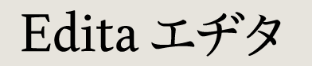
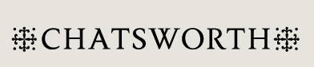
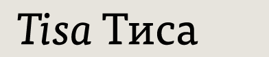

Pilar Cano (Spain) email
Edita specimen
RoP
published by TypeTogether

Sara Chapman (UK) email
web
Chatsworth RoP
Jérémie Hornus (France) email
Kefa specimen

Mitja Miklavčič (Slovenia) email
Tisa published by FontFont
Thanks!
The MATD 2006 graduates would like to thank the many people who made their sojour at Reading a splendid time, including Gerry Leonidas, Gerard Unger, Fiona Ross, Michael Twyman and the many other lecturers who generously shared their expertise. Cheers!
Typeface designs © the respective authors, 2000–2009.
Website design and production © David Březina, 2007–2009.
The typeface used in the headline is Ronnia by TypeTogether.
Last update: 6 August 2009 — RSS feed